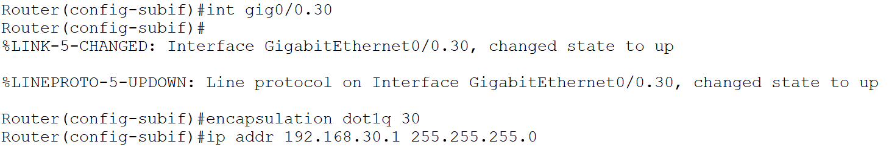

A
B
C
D
VLAN, také Virtual LAN, Virtual Local Area Network je velmi zjednošeně řečeno virtuální rozdělení sítě na L2
Pro celkovou definici je třeba si vysvětlit dva pojmy:
Defaultně switch dává všechny své interfaci do jedné a té samé broadcastové domény. Pokud tedy bez žádných dalších extra nastavení budeme chtít mít více broadcastových domén budeme muset koupit další switch. Pokud jsme ale skrblíci a nechceme utrácet, můžeme síť rozdělit do dvou VLAN, a tím v podstatě docílit toho samého, jako kdybychom koupili další switch.

Na zjednodušeném schématu sítě najdeme právě jednu broadcastovou doménu
Je důležite také zmínit že switch běžně neposílá data z jedné VLANy do druhe.
VLAN nastavíme tak, že na switchi přidělíme určitému interfacu typ portu (ACCESS/TRUNK)
Pokud je switchport nastavený na ACCESS tak k němu můžeme přiradit právě jednu VLANu.
Do zařízení pak budou moci proudit jen ty rámce, ktere jsou ve stejné VLAN.

Vlan {VLAN_ID}, VLAN_ID jakékoliv číslo od 2-1001 a 1006-4094
pozn. nastavení name není povinné, je ale dobrou praxí ho uvádět

pozn. Pokud VLAN ještě není vytvořená, switch ji automaticky vytvoří

Pakliže se dostaneme do situace, kdy máme více switchu, na kterých jsou nastavene VLANy a chceme, aby mezi dvěma stejnýma VLANama probíhala komunikace (viz ukázka), použijeme Trunk porty
Mohli bychom mezi switchi nastavit též Access port a přidelit mu VLANu, ale toto řesení je neefektivni, protože co VLANa, to médium, a tudíž kdyby tam těch VLAN bylo víc tak by to finančně nemuselo být vůbec pohodlné
Efektivní řešení je vytvoření tzv. Trunk portu, který umožňuje přenášet data různých VLAN po jednom médiu.


Pakliže tedy posíláme rámec přes trunk, tak switch daný rámec označí pomocí VLAN ID (to číslo, které zadáváme při vytváření VLANy).
Když poté za pomocí trunku dorazí rámec na další switch, tak ten switch pak už bude vědět z jaké VLANy rámec pochází a podle toho ho bude moci poslat dál.
Na Cisco switchích se můžeme setkat s dvěma Trunking protocoly:
802.1Q přidává do Ethernetové hlavičky 4bytový VLAN Header (tag), to pak pomáhá switchi určit z které VLANy daný rámec pochází.
VLAN Header obsahuje 4 další pole:
Je typ VLANy, která se při průchodem přes trunk neoznačuje. Když pak switch dostane neoznačený rámec, tak předpokládá, že patří právě Native VLAN, proto je nutné aby Native VLAN byla na obou koncích trunku stejná.
Za normálních okolností je Nativní VLAN - VLAN 1, to lze ale změnit viz. Konfigurace Trunku

Velmi doporučuji si tenhle příkaz zapamatovat, hodí se při troubleshootingu
Je nutné, aby veškerá nastavení byla na obou koncích trunku stejná!
Lab zaměřený na základní konfiguraci společně s nastavením trunku můžete stáhnout zde
Je forma speciálního útoku na síť, kdy se útočníkovi podaří dostat rámec z jedné VLAN do druhé bez použití Inter-VLAN routingu
Funguje tak, že útočník je připojený k zařízení, který je u NATIVE VLAN (1), ten útočník poté vytvoří rámec kde už předem bude mít dané do jaké VLAN se chce dostat (třeba 20) a pošle rámec na cílové zařízení s daným VLAN ID.
Switch poté při průchodu na trunk rámec označí a tím vytvoří double Tag, další switch jej pak odznačí a zbyde mu ten uměle vytvořený tag, ten switch poté pošle až do cíle
Útok funguje pouze tehdy, když je útočník připojený na zařízení pod NATIVE VLAN
Chceme-li posílat rámce mezi VLANy, tak jednou z možností je použití ROAS - Router on a stick.
ROAS funguje tak, že mezi switchem a routrem se nastaví na interfacu switche trunk.
Na interfacu routeru se nakonfigurují subinterfaci.
Na těchto subinterfacech je nutné zadat číslo VLANy a IP adresu.

Pakliže PC1 (VLAN 10) bude chtít poslat data PC4 (VLAN 30), tak při odchodu ze switche na router bude rámec označen.
Router ví, že rámec s označením 10 je na jeho subinterfacu g0/0.10.
Router si dále všimne, že jeho dest IP adresa leží na subinterfacu g0/0.30.
Tudíž router nasměruje daný paket na subinterface g0/0.30 a switch bude daný rámec brát tak, že patří do VLAN 30 a dále ho nasměruje do PC4.
Nesmíme zapomenou zapnout nejdříve celý interface
Příkazem říkáme, že rámce s VLAN 10 budou na tomhle subinterfacu a také specifikujeme trunking protokol a dále tomuto interfacu přiřazujeme IP adresu
Celý tento postup zopakujeme i pro další VLAN
Lab na procvičení ROAS můžete stáhnout zde
| Příkazy | Popis | Mód |
|---|---|---|
| vlan {vlan-id} | Vytvoří VLAN a přepne do VLAN interfacu | Global Config |
| name {vlan-name} | Pojmenuje VLAN | VLAN interface |
| switchport mode {access | trunk} | Přepne interface do modu | Interface |
| switchport access vlan {vlan-id} | Přiřadí VLANu k danému interfacu | Interface |
| switchport trunk encapsulation {protocol} | Nastaví trunking protokol na switchi | Global Config |
| switchport trunk native vlan {vlan-id} | Nastaví Native VLAN | Interface |
| switchport trunk allowed vlan {add | all | except | remove} {vlan-id} | Nastaví povolené VLANy na trunku | Interface |
| encapsulation dot1q {VLAN_ID} | Nastaví sub interface pro danou VLAN | router - sub interface |
| show interfaces switchport | Zobrazí informace o interfaci | EXEC |
| show interfaces {interface-id} trunk | Zobrazí informace o truncích | EXEC |
| show vlan brief | Zobrazí informace o VLAN | EXEC |
A
B
C
D